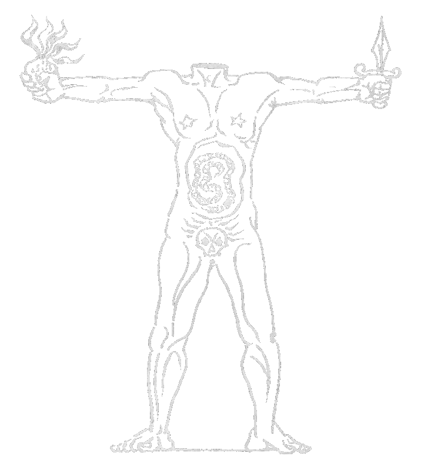

[Translated from the French. The typesetting of the original is
superior, so I recommend observing that. And be forewarned that this version is not typeset for mobile.]

THE SACRED CONSPIRACY
[Or "The sacred conjuration"]
A nation already old and corrupt, which courageously shook off the yoke of its
monarchial government to adopt a republican one, can only maintain itself by a
heap of crimes; as it is already immersed in crime, and if it wanted to pass
from crime to virtue, that is to say from a violent state into a gentle one,
it would fall into an interia from which its certain ruin will soon result.
Sade.
What has the face of the political and is imagined to be political, will
one day be unmasked as a religious movement.
Kierkegaard.
You solitary ones, you who today live apart, you will one day be a people.
Those who have designated themselves are themselves those who one day form a
designated people —— it is from this people that will be born the existence
that surpasses man.
Nietzsche.
What we have undertaken must not be confused with anything else,
cannot be limited to the expression of a thought and even less to what is
accurately considered as art.
It is is necessary to produce and to consume: many things are needed that have
yet to come about and it is the same for political unrest.
Who thinks, before having struggled until the end to make a place for men, that
it is impossible to see them without feeling the need to destroy them? But if
nothing can be found beyond the political work, human greed will not meet the
void.
WE ARE FERVENTLY RELIGIOUS and, to the extent that our existence is our
condemnation of all that is recognized today, it is an internal requirement
that we will be equally imperious.
What we undertake is war.
It is time to abandon the civilized world and her light. It is too late to cling
to being reasonable and educated —— that has lead to a life without appeal.
Secretly or not, it is necessary to become completely different or else cease to be.
The world which we have belonged to will never propose to love outside of each
individual insufficency: its existence is born from its commodity. A world that
cannot be loved in death —— in the same way that a man loves a woman —— only
represents the interest and the obligation of work. If it is compared with
disparate worlds, it is hideous and is found lacking to them all.
In the separate worlds, it would be possible to lose oneself in ecstacy,
which is impossible in the world of educated vulgarity. The advantages of
civilization are offset by by the way by which men profit from it: the current
men profit from it by becoming the most degraded of all the things that have
existed.
Life has always been a tumult without apparent cohesion, but she only finds her
grandeur and her reality in ecstacy and extatic love. What holds to
ignoring or to not knowing excasty, is an incomplete existence by which thought
is reduced to analysis. Existence is not only a restless void it is a dance
whose force dances with fanaticism. Thought does not have as an
object a dead fragment, it exists internally like flames.
One has to become closed and unshaken for the existence of the civilized world
to finally appear uncertain. It is useless to respond to those who can believe
in the existence of this world and authorize its existance. They speak, it is
possible to see them without hearing them and, at the same time that one looks
at them, to only "see" what exists far behind them. One has to refuse
boredom and only live by what fascinates.
On this path, it would be vain to be agitated and to try to attract those who
have weak desires, such as to pass the time, to laugh or to became
individually bizarre. It is necessary to advance without looking behind and
without taking into account those who do not have the power to forget the
immediate reality.
Human life is tired of serving the head and reason of the universe. To the
extent that it becomes that head and that reason, to the extent that it is
necessary to the universe, it accepts servitude. If it is not free, existence
becomes empty or neutral and, if it is free, it is a game. The Earth, such much
as she engenders that of cataclysms, of trees or of birds, is a free universe:
the fascination of liberty was tarnished when the Earth had produced a being
which requires necessity as a law above the universe. Man has however remained
free to no longer respond to any necessity: he is free to resemble all that
is not him in the universe. He can remove the thought that it is him or that it
is God that keeps the rest of things from being absurd.
Man escapes from his head as the condemned escapes from prison.
He has found beyond himself not God who is the prohibition of crime, but a being
who ignores the prohibition. Beyond what I am, I meet a being who makes me
dream because he is without the head, which fills me with anxiety because it was
made of innocence and crime: he holds a weapon of iron in his left hand, flames
like a sacred-heart in his right hand. He brings together Life and Death in the
same eruption. He is not a man. He is not a god either. He is not me but he is
more me than me: his belly is a maze in which he loses himself, I am lost with him
and in which I refind myself being him, he is called a monster.
That which I think and I represent, I do not think and represent alone. I write
this in a small cold house in a fishermens' village, a dog just barked in the
night. My room is next to the kitchen where André Masson happily shakes and
sings; at the same moment where I write thusly, he puts on a phonograph a disc
of the ouverture of "Don Juan"; more than all else, the ouverture of "Don Juan"
links the existence befallen to me to a challenge that works me to a ravishemnt
outside of myself. At that same instant, I saw that acéphale being, the intruder
that two equally carried-away obessions composed, becoming the "Grave of Don
Juan". A few days ago, when I was with Masson in the kitchen, seated, with a
glass of wine in hand, while he, his own death and the death of his own
suddenly apprehended again, eyes fixed, suffering, almost shouted that death
must become an affectionate and passionate death, shouted his hatred for for a
world which weighs down on the paw of the employee, I could no longer doubt that
the fate and endless tumult of human life was open to those who could no longer
exist as eyes aburst but [who could exist] as seers carried away by an
overwhelming dream that could not be their own.
Tossa, April 29, 1936
Georges Bataille

The sword, it is the bridge
THE MONSTER
...We advanced in the little dry and burnt plain where that phenomenon
appeared. The environment that surrounded it was sandy, uncultivated and
filled with stones. To the extent that one advanced, one felt an excessive
heat and one breathed the odor of copper and the charcoal of the earth that the
volcano exhales. We finally glimpsed the flame that a light rain, that
fortuitously appeared, rendered more fervent: that hearth could fit
thirty or forty tower feet. If one dug into the earth in the surroundings, the fire
immediately burned under the instrument that tore it up...
Sade (Juliette)
A messenger will be sent to sir Lenormand, a wood merchant... to entreat him to
come himself, followed by a cart, to get my body to be transported... to the
woods of my land of Malmaison, where I want it to be placed, without any
ceremony, in the first coppice of shubbery that is found to the right of said
wood... My pit will be made by a farmer of Malmaison, under the
inspection of Mr. Lenormand, who will only leave my corpse after he has placed
it in said pit... Once the pit has been covered, it will be sown with acorns,
so that, by the following, the terrain of the said pit will find itself
replenished and the coppice found filled like it was before, the traces of my
tomb will disappear on the surface of the earth, as
I flatter myself that my
memory will be erased from the minds of men.
Testament of the Marquis de Sade
The different methods of the destructive expectation of the present translate
into Sade, in the mental operations which preside over the different practices
of "experimental" debauchery. Happiness consists not in pleasure, but in the
desire to break the restraints that oppose that desire, that is not in
the presence, but in the expectation of absent objects that we will
enjoy these objects —— that is to say we will enjoy these objects by
destroying their real presence —— (the murder of debaucheries) —— where
they trick us —— and they appear to refuse us [their] presence (in their resistance to
what we would like to make them undergo) [and] we mistreat them in order
to render their presence and their destruction (what in moral sadism is
expressed for example in the sacrilege of the address of the absent God). Among
some characters of Sade, the deception of the expectation finishes by becoming
an erogenous fiction: the object does not disappoint, but we treat it as if
it did. However, one of the much favored characters admits to only having
wished to have; his pleasure has never been motivated by the objects which
surround him, "but by those which are not there". "Is it possible to commit a crime as
we conceive of it and as you speak it, for I admit that my imagination has always
been beyond my means, I have always a thousand times more concieved that which I
could not do and I am always complaining of nature which gives me the desire to
offend, [and] always removes my means."
Here again Nature is lived like a provactive presence of expectation, a presence
which seems to shirk away from aggressive expectation. The sadistic conscience
wants itself in the face of its own eternity that it has renounced and that it could
not longer recognize under the traits of astute Nature: on the one hand
maintained in the organic functions of the individual, it experiences the limits
of aggression; on the other, in the movements of the imagination, it has the
sensation of the infinite; but instead of finding there its eternal condition
and its universal unity, it glimpses there as if in a mirror the infinite
reflection of diverse and multiple possibilities lost to the individual. This
outrage to be inflicited on nature would cease to be individual, for it
immediately and simultaneously totals all that Nature contains. It will reach a
pseudo-eternity, a temporal existence, of a perverse polymorphism. Having
renounced the immortality of the soul, the characters of Sade, in returning,
pose their candidature for the integral monstrosity, thereby denying the
temporal creation of themselves, their expectation paradoxically replaces them
in the state of possession of all the possibilities of development and
unconditional power, which they translate by their feeling of unconditional
power. The erotic imagination which develops to the extent that the
individual forms, sometimes by counterbalancing a perversion, sometimes by the
instinct of propogation, and which chooses the momements of solitude and of
expectation of the individual —— moments where the world and things are absent ——
by invading itself, would thus correspond to an unconscious attempt to recover
everything possible that has become impossible because of self-awareness ——
that formation having permitted the realization of the other self —— thus
[corresponding] to an activity of aggression, to the detriment of external
reality, having for a goal the rediscovery of its original integrity. So much so
that for the individual living in permenant expectation, the imagination
resembles again an effort to escape the object that it expects, to return to the
atemporal condition where the possession of all the possible exluded the
possibility of the experience of loss. By the mouth of his characters, Sade
himself confesses: "I invented horrors, and I carry them out calmly: in a state
to refuse me nothing, however expensive my projects of debauchery may be, I
carried them out immediately." In effect, the solitary, the prisonner Sade
deprived of all means of action, has in the end the same power as the
omnipotent heroes because he dreams. The unconditional power which no longer knows
resistance, which no longer knows the obstacles on the outside, nor on the
inside of itself, which only feels a blind flow. "I carried them out
immediately." Haste which hardly manages to exhaust the movement of "that sort
of inconstistence, flail of the soul and too fatal perogative of this sad
humanity." Thus the soul, aspiring to deliverance, is prey to a contradictory
hope; it hopes to escape the painful experience of loss in refusing the object
its presence, while in the same moment it dies of desire to see the object
restored in the present, to break within itself the destructive motion of time.
Pierre Klossowski
THE UNITY OF THE FLAMES
...a feeling of communal unity. This feeling that is felt by a human
group when it finds itself an intact and complete force; it emerges
and is exalted in holidays and in assemblies: a great desire of cohesion that
then prevails over oppositions, isolations, the competitions of profane
everyday life."
Vel' d'Hiv', June 7, 1936. —— When the crowd brought itself to the place
where it was assembled with the immense sound of an tide —— "with a noise of
the kingdom" —— the voices which made themselves heard above it cracked. It
was not the speechs the crowd heard that made from it a miracle and
which made it secretly weep, it was its own expectation. Because it does not
demand bread alone, because its human greed is thus clear, thus limitless,
thus as terrible as the flame —— it demands first of all that it EMERGE,
that it be.
ACÉPHALE
IS THE EARTH
THE EARTH UNDER THE CRUST OF THE SUN IS AN INCANDESCENT FIRE
MAN WHO REPRESENTS THE DOWNTRODDEN
THE INCANDESCENCE OF THE EARTH
EMBRACES THEM
AN EXTATIC FIRE WILL DESTROY THE NATIONS
WHEN THE HUMAN HEART BECOMES FIRE
AND IRON
MAN WILL ESCAPE HIS HEAD AS THE CONDAMNED WILL PRISON.
〰〰〰〰〰〰〰〰
ACÉPHALE, published by Georges Ambrosino Georges Bataille
and Pierre Klossowsky
will appear 4 times a year
G.L.M. EDITIONS 6 RUE HUYGHENS PARIS 14 E
The illustrious notebooks will be regularly 16 pages. The first is
exceptionally 8 pages. The second will be publish in Septembre with
24 pages. It will be entirely consecrated to a
REPAIR OF NIETZSCHE
CONDITIONS OF SALE:
A notebook of 16 pages: 3f. A subscriptions of one year (64 pages)
France and Belgium: 10f; Foreign, U.P.: 12f; another country: 15f
The price of a support subscription, entitling you (in January 1937)
to a engraving representing ACEPHALE is double.
〰〰〰〰〰〰〰〰
TO BE PUBLISHED IN OCTOBER 1936: THE G.L.M. EDITIONS
SACRIFICES
1 Mithra 2 Orpheus 3 The Crucified 4 Minotaur 5 Osiris
five etchings by
ANDRE MASSON
text by
GEORGE BATAILLE
Price of subscription
140 ex. to arches(?): 125 f . 10 ex to Japan 200f
G.L.M. EDITIONS
During the extatic vision the objects finally revealed itself...
Like catastrophe, but niether like God nor like nothing...
the object that love is incapable of freeing otherwise outside of
oneself demands to throw away the cry of a torn up existence.
G L M Printings manager: Jacques Chavy